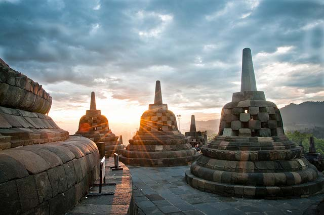

Wisata Candi Borobudur
Borobudur adalah sebuah candi Buddha yang terletak di Borobudur, Magelang, Jawa Tengah, Indonesia. Lokasi candi adalah kurang lebih 100 km di sebelah barat daya Semarang, 86 km di sebelah barat Surakarta, dan 40 km di sebelah barat laut Yogyakarta. Borobudur terletak di atas bukit pada dataran yang dikeliling dua pasang gunung kembar; Gunung Sundoro-Sumbing di sebelah barat laut dan Merbabu-Merapi di sebelah timur laut, di sebelah utaranya terdapat bukit Tidar, lebih dekat di sebelah selatan terdapat jajaran perbukitan Menoreh, serta candi ini terletak dekat pertemuan dua sungai yaitu Sungai Progo dan Sungai Elo di sebelah timur.
Dari lokasinya yang berada diatas bukit, candi borobudur menawarkan udara sejuk khas pegunungan yang tentunya bisa membuat kita merasa badan kita kembali fresh. Selain itu, ketika kita berada diatas candi, kita dapat melihat proses terbitnya matahari pada pagi hari maupun proses terbenamnya matahari pada sore harinya. Candi borobudur dapat dijadikan tempat referensi untuk anda sekeluarga ketika berlibur di Jogja, karena selain keindahannya yang mempesona, anak - anak juga dapat diajarkan untuk mengenal budaya Indonesia dan diajak untuk dapat melestarikannya.
Bagi anda yang ingin menuju ke lokasi candi borobudur dengan menggunakan kendaraan umum, dari Jogja anda harus menuju Terminal Jombor, Jogjakarta. Bisa naik bus Trans Jogja tujuan ke Terminal Jombor, Tarif sekitar Rp.4.000. Dari Terminal Jombor naik mikro bus tujuan ke Terminal Borobudur. Bus berada di sebelah kanan pintu masuk terminal. Di kaca depan bus tertulis “Jombor – Borobudur”. Tarif turis lokal sekitar Rp. 10.000 – 12.000. Untuk turis asing sekitar Rp. 20.000. Waktu tempuh sekitar 45 menit. Dari Terminal Borobudur ke Candi Borobudur bisa jalan kaki, naik becak atau andong. Untuk masuk ke kawasan candi Borobudur, anda harus membeli tiket masuk sekitar Rp. 30.000 dan USD 20 untuk turis asing. Candi Borobudur dibuka mulai jam 06.00 sampai dengan 17.00 WIB.
ABg Trans menawarkan kemudahan bagi anda yang ingin menuju ke candi borobudur, dengan layanan FREE DELIVERY anda akan lebih mudah dan lebih cepat untuk sampai ke candi borobudur, dengan harga mulai dari Rp. 60.000,00 anda bisa puas berlibur di Jogja. Jangan ragu untuk bertanya dan menggunakan jasa kami, karena kami mengutamakan kepuasan, keamanan dan kenyamanan pelanggan.
Jalan - Jalan ke Jogja, ABg Trans Aja !!!
Hubungi :
Telp. : 0856-4162-6783 | 0812-2661-2355
WA : 0877-3825-1191 | 0858-7624-4840
BBM : 553db3e7 | D0DE903F
IG : @abg_trans
Line : sewamotordijogja
FB : Rental Motor Jogja AB'Gtrans